되돌려진 FP-class 패치의 크래시를 재현하고 수정하기
만료된 빌드 로그 대신 표적 IR로 마스크 폭 불일치를 재현하고 demanded-elements 전달을 안전하게 만든다.
reland-174176-slides.pdf의 전체 내용입니다. 설명·코드·표·검증 기록을 생략하지 않고 옮겼습니다. 그림 안의 문자 인식 결과에는 기호 오류가 있을 수 있어 이미지도 함께 제공합니다.
이 문서의 목차
L LV M · I N S T C O M B I N E · R E L A N D R E P O R T / revert된 패치를 / 반년 만에 되살리기
LLVM · INSTCOMBINE · RELAND REPORT
revert된 패치를
반년 만에 되살리기
Re-landing a Reverted LLVM Patch — SimplifyDemandedFPClass · DemandedElts
PR #174176 → #212183
Issue #174143 · 2026 OSSCA
kevinlim17
페이지 배치·기호·도식 확인하기

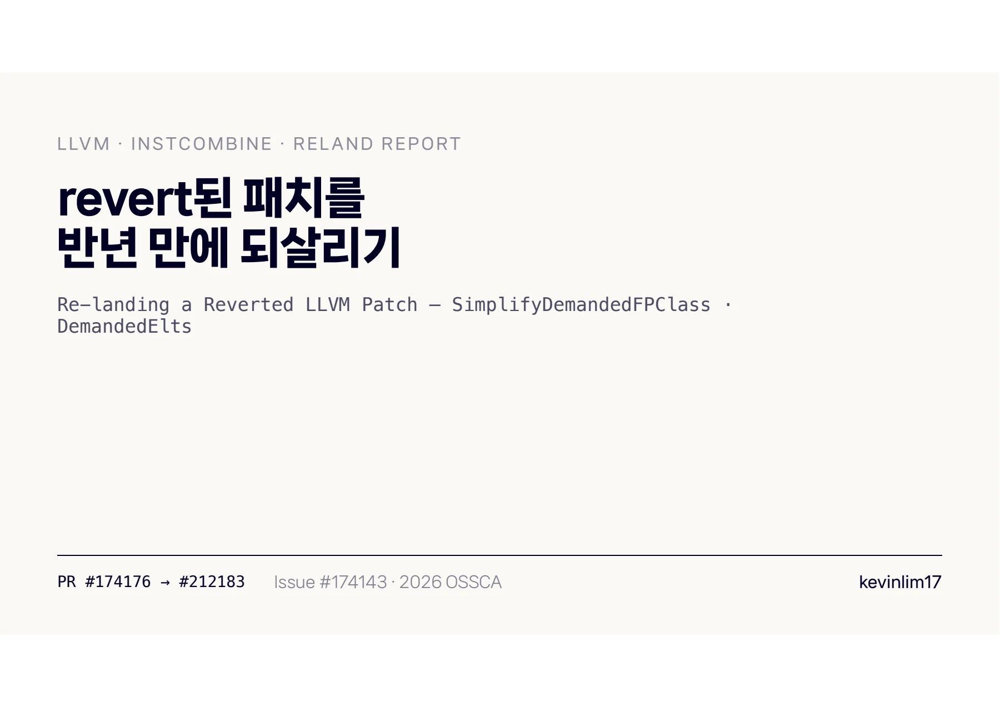
한 장 요약 / 4시간 3곳 4,921 / 머지 → revert 실측된 크래시 사이트 AMDGPU lit PASS
한 장 요약
4시간
머지 → revert
2026-01-02, 같은 날. 로그는 pruning, 원인은 미지.
3곳
실측된 크래시 사이트
diff만 보면 한 곳처럼 보였다. 재현이 셋 을 찾았다.
4,921
AMDGPU lit PASS
revert를 유발한 빌더 대응 테스트, 실질 전수 통과.
revert는 노이즈가 아니라 실재하는 크래시 결함 때문이었고, 재현 → 수정 → 회귀 테스트로 봉인했다.
페이지 배치·기호·도식 확인하기

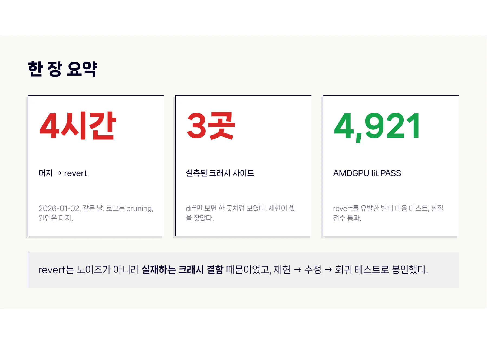
배 경 · 세 단 계 로 / 이게 무슨 코드인가 / LLVM · InstCombine SimplifyDemandedFPClass = (plumbing)
배경 · 세 단계로
이게 무슨 코드인가
LLVM · InstCombine
코드를 더 단순한 형태로 접 는 단계
LLVM은 컴파일러 툴킷,
InstCombine은 그 안의 peephole
최적화 패스다.
SimplifyDemandedFPClass
"이 값의 종류가 정말 필요한 가"
부동소수점 값이 NaN·Inf·0 중 무엇인
지 따져 불필요한 계산을 지운다.
=
(plumbing)
"몇 번째 레인이 필요한 가"를 넘겨준다
벡터는 값 여러 개가 한 줄로 늘어선 것
— 그 중 쓰이는 칸을 알려주는 인자를
추가한다.
페이지 배치·기호·도식 확인하기

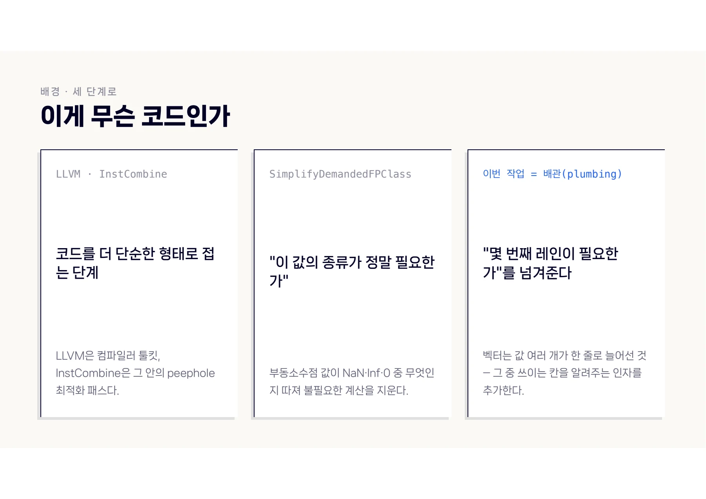
배 경 · I S S U E # 1 741 4 3 / 두 함수의 비대칭 / 분석 (ValueTracking) — 이미 있다 단순화 (InstCombine) — 없다
배경 · ISSUE #174143
두 함수의 비대칭
분석 (ValueTracking) — 이미 있다
computeKnownFPClass(
Value *V,
const APInt &DemandedElts,FPClassTest InterestedClasses, ...)
벡터에서 어느 레인이 실제로 쓰이는지를 단순화 쪽은 알 수 없다 — 레인별 최적화가 막힌다.
단순화 (InstCombine) — 없다
SimplifyDemandedFPClass(
Instruction *I, unsigned Op,
/* DemandedElts 없음 */
FPClassTest DemandedMask, ...)
이번 작업(PR A)은 배관만 깐다. 레인 로직은 후속 PR B.
페이지 배치·기호·도식 확인하기

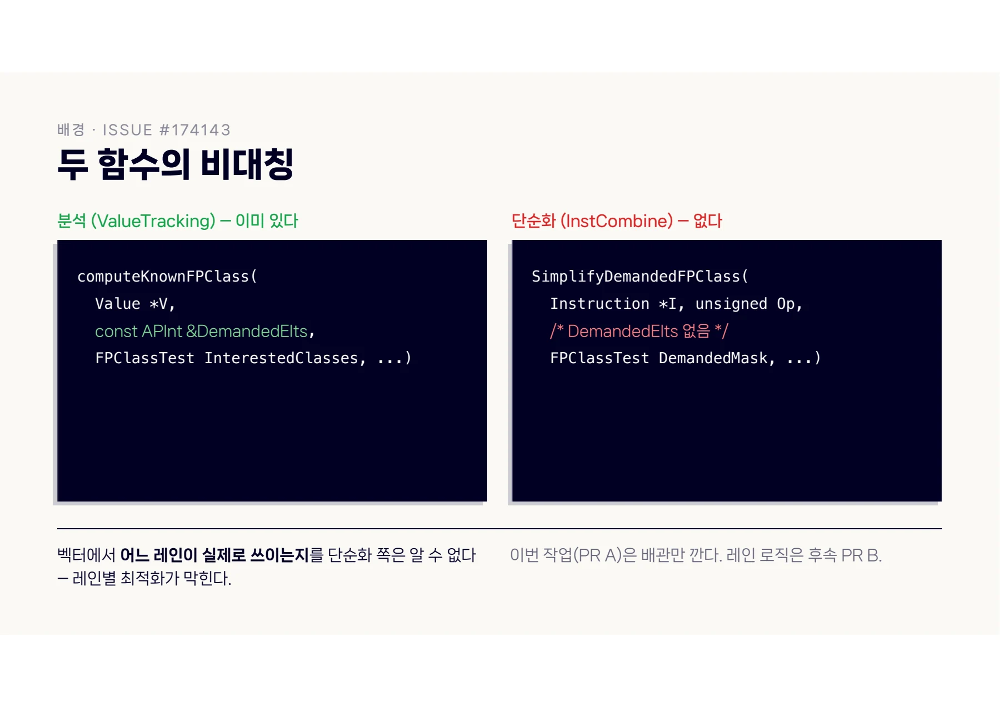
타임라인 — 4시간과 반년 / 2025-12-31 2026-01-02 2026-02-27 2026-02-28 2026-07-26 / 핸들러 3개 추가 #174176 머지 → 당 사용자의 요청 필드
타임라인 — 4시간과 반년
2025-12-31
핸들러 3개 추가
extract / insert / shuffle — 각기 TODO 를 심는다
2026-01-02
#174176 머지 → 당 일 revert
revert 메시지 전문: "Revert to unblock bots." + buildbot 링 크 한 줄 — 그게 전부
2026-02-27
사용자의 요청
AMDGPU 메인테이너 arsenm이 기능을 기다 린다
2026-02-28
필드 열림
revert 수행자: "I am not the author…"
수요·명분·공백이 모두 확인된 상태였다. 오픈소스에서 방치된 revert는 그대로 기여 기회다.
2026-07-26
착수 · 재착륙
이슈 배정 → 원인 규명
→ PR #212183
페이지 배치·기호·도식 확인하기

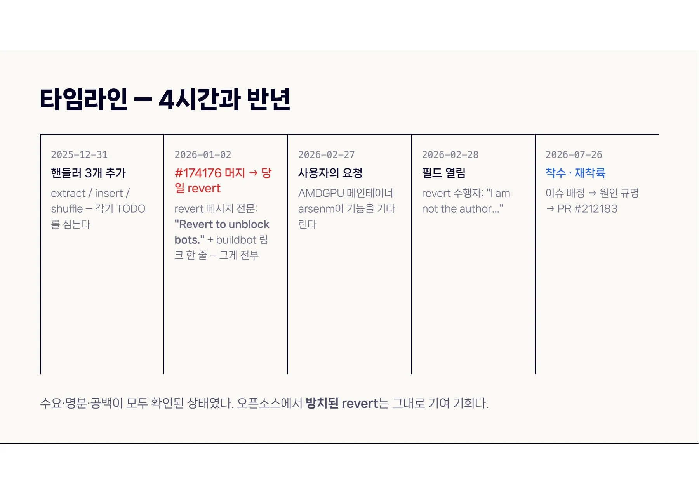
P R # 1 74 24 2 · 2 0 2 6 - 0 2 - 2 7 / “Are you going to try to re-land this? I'm / going to need this soon.”
PR #174242 · 2026-02-27
“Are you going to try to re-land this? I'm going to need this soon.”
@arsenm AMDGPU 백엔드 메인테이너 — FP-class 분석의 실사용자
페이지 배치·기호·도식 확인하기

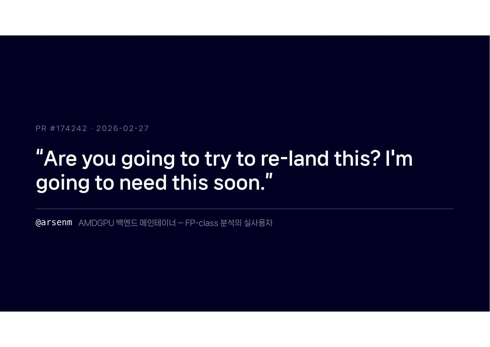
원인 규명 / 빨간불의 출처를 분리하고, 없는 로그를 재현으로 갈음한다
1
원인 규명
빨간불의 출처를 분리하고, 없는 로그를 재현으로 갈음한다
페이지 배치·기호·도식 확인하기

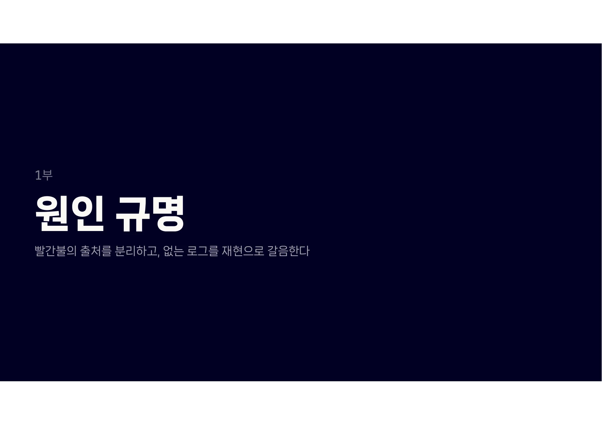
미 스 터 리 / 증거가 사라진 상태에서 시작 / 유혹 ①
미스터리
증거가 사라진 상태에서 시작
builder #123 · build 32907
log pruned
revert가 가리킨 유일한 근거가 만료돼 사라졌다. 남은
단서는 빌더 번호 하나.
유혹 ①
"buildbot이 빨개졌으니 내 패치 탓" — 확인 없이 결론으로 직 행.
유혹 ②
"플래키한 인프라 노이즈" — 그대로 재착륙했다가 같은 자리에서 다시 죽는다.
택한 순서
신호의 출처를 빌더 단위로 분리한 뒤, 메커니즘 가설을 세우고 표 적 IR로 재현한다.
페이지 배치·기호·도식 확인하기

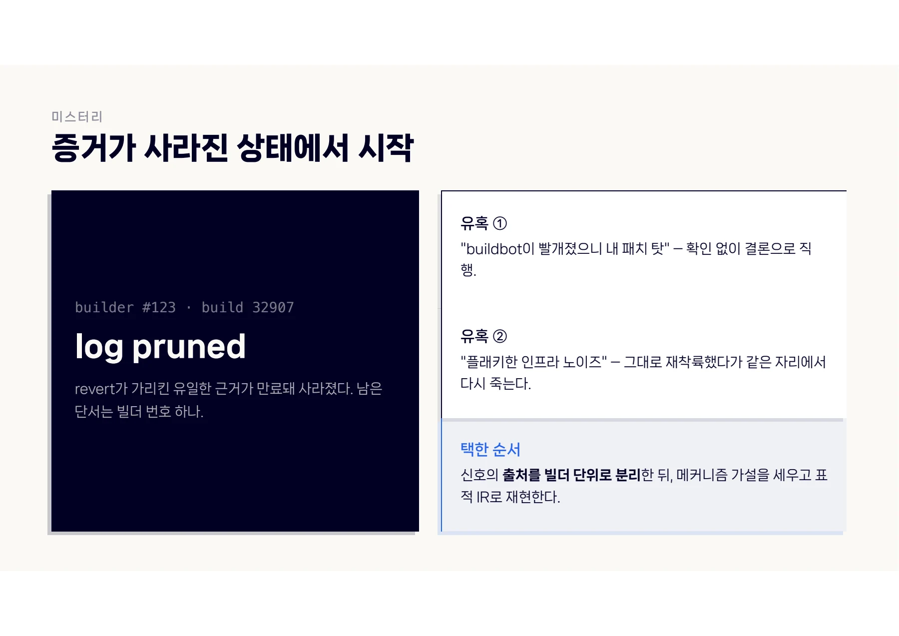
첫 관 문 / 빨간불의 출처 분리 / builder #162 · lldb-x86_64-debian builder #123 · clang-hip-vega20
첫 관문
빨간불의 출처 분리
builder #162 · lldb-x86_64-debian
무관 노이즈
① lldb-dap는 InstCombine과 무관 ② 실패 revision이 revert 커밋 자체 — 문제 코드가 이미 빠 진 상태
builder #123 · clang-hip-vega20
진짜 후보
buildbot API로 AMDGPU HIP 빌더(Vega20/gfx906) 확인. FP-class 분석은 AMDGPU 코드젠의 핵심 ( nofpclass ) — 연관 개연성이 높다.
"buildbot 빨간불 = 내 탓"도, "그냥 노이즈"도 아니다. 빌더 단위로 분리하면 판정 가능한 질문으로 줄
어든다.
페이지 배치·기호·도식 확인하기

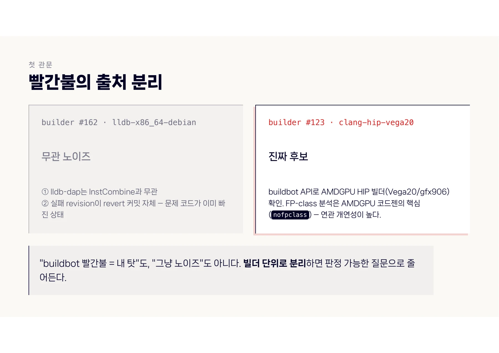
근 본 원 인 / lane-width mismatch / 전달된 마스크 (result 피연산자 상수 벡터 (4 lanes)
근본 원인
lane-width mismatch
전달된 마스크 (result 폭)
1
bitwidth = 1
피연산자 상수 벡터 (4 lanes)
[0] [1]
→
[2] [3]
DemandedElts[1] → Bit position out of bounds!
방향은 하나뿐
마스크가 피연산자보다 좁을 때만 죽는 다. 넓으면 조용히 지나가지만 여전히 틀 린 마스크다.
assertion 빌드에서만 터진다 — 그래서 AMDGPU assertion 빌더가 이를 밟았고, 일반 빌드는 조용했다.
페이지 배치·기호·도식 확인하기

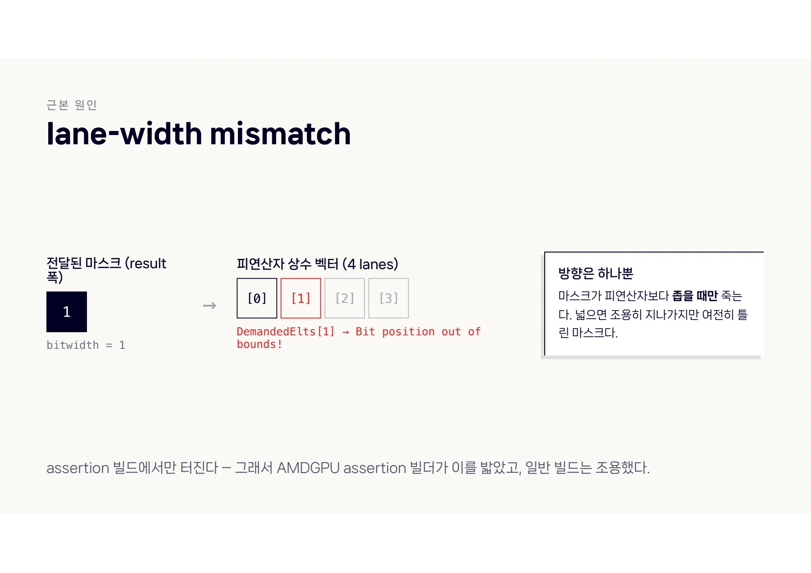
로 그 부 재 의 유 일 한 대 안 / 재현 IR — two-use extractelement / %v = fadd <2 x float> %x, <float 1.0, float 2.0>
로그 부재의 유일한 대안
재현 IR — two-use extractelement
%v = fadd <2 x float> %x, <float 1.0, float 2.0>%e0 = extractelement <2 x float> %v, i32 0%e1 = extractelement <2 x float> %v, i32 1%m = fmul float %e0, %y%m2 = fmul float %m, %e1; %v를 two-use로 만들어 스칼라화를 차단
; fmul이 FPClass 경로의 진입점
기존 27개로는 재현 실패
대부분 함수 인자 기반이라 상수-벡터 경로에 닿지 않 고, one-use는 먼저 스칼라화된다.
진입점은 사실상 둘뿐
visitFMul 과 visitReturnInst 의 nofpclass — 그래서 모든 재현 IR이 fmul 또는
ret nofpclass 로 끝난다.페이지 배치·기호·도식 확인하기

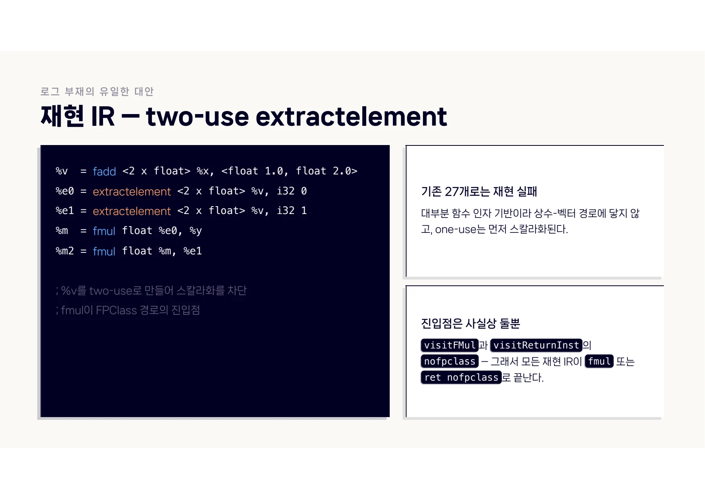
크래시 콜스택 / visitFMul InstCombineMulDivRem.cpp:1136 assert 메시지 / SimplifyDemandedInstructionFPClass 스칼라 진입 · wid
크래시 콜스택
visitFMul
SimplifyDemandedInstructionFPClass
ExtractElement
computeKnownFPClass (multi-use)
· DemandedElts[1]
APInt::operator[] · assert
InstCombineMulDivRem.cpp:1136
스칼라 진입 · width-1 마스크
width-1 마스크가 벡터 피연산자로 관통
ValueTracking.cpp 5126–5162
1 index 1
APInt.h:1053 · exit 134
assert 메시지
Bit position out of bounds!
스택 최상단은 예외 없이 computeKnownFPClass — 진단이 한 지점으로 수렴했다.
페이지 배치·기호·도식 확인하기

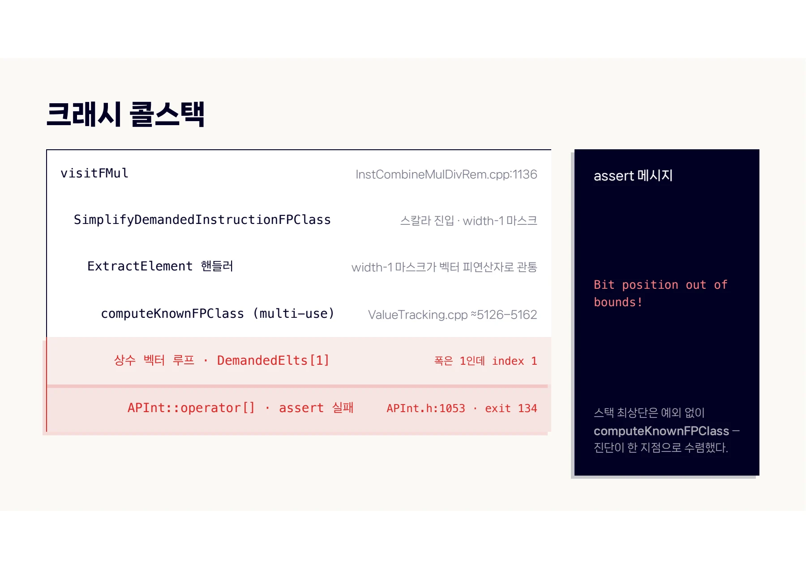
원 본 방 식 vs 재 착 륙 본 / 크래시 사이트는 3곳 / 테스트 함수 원본 방식 재착륙본
원본 방식 vs 재착륙본
크래시 사이트는 3곳
테스트 함수
extractelement_scalar_use
shufflevector_narrowing
insertvalue_vector_element
shufflevector_widening / insertelement / extractvalue
원본 방식
exit 134
exit 134
exit 134
exit 0
재착륙본
exit 0
exit 0
exit 0
exit 0
원본 diff만 보면 ExtractElement 하나로 보였다. 폭이 넓어지는 3건은 죽지 않지만 여전히 틀린 마스크라 함께 테스트 로 덮었다.
페이지 배치·기호·도식 확인하기

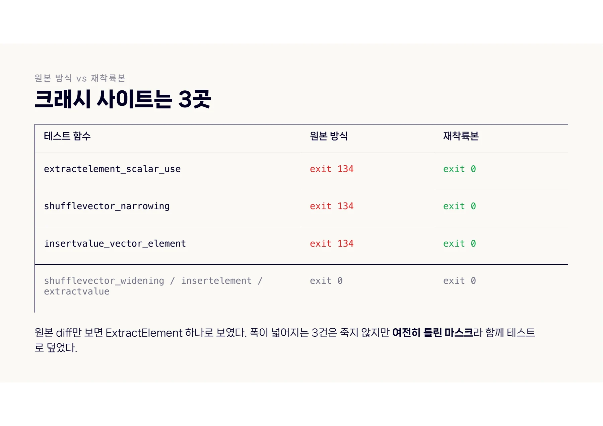
증거의 한계 / 확정된 것 증명 불가 / 원본 패치에 실재하는 크래시 결함이 있었다 — 로컬에서 builder #123의 build 32907이 바로 이 경로를 밟았
증거의 한계
확정된 것
증명 불가
원본 패치에 실재하는 크래시 결함이 있었다 — 로컬에서 세 사이트를 재현했다.
builder #123의 build 32907이 바로 이 경로를 밟았 는지 — 로그가 pruning되어 직접 확인 불가.
그럼에도 (a) 결함이 실재하고 (b) AMDGPU assertion 빌더가 정확히 이런 크래시를 밟는 종류라는 점에
서, 재착륙의 정당성은 충분히 뒷받침된다.
페이지 배치·기호·도식 확인하기

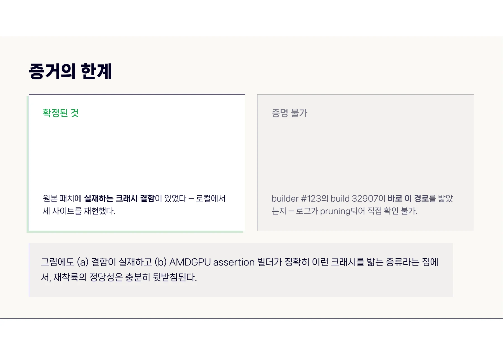
재착륙과 검증 / 단순 revert가 안 되는 트리에, 크래시를 봉인한 채로 다시 얹는다
2
재착륙과 검증
단순 revert가 안 되는 트리에, 크래시를 봉인한 채로 다시 얹는다
페이지 배치·기호·도식 확인하기

핵 심 판 단 / 피연산자 폭 마스크 재생성 / 사이트 전달 마스크 static APInt getAllDemandedElts(Type *Ty) {
핵심 판단
피연산자 폭 마스크 재생성
사이트 전달 마스크
ExtractElement op0
InsertElement op1 / op0
ShuffleVector
DemandedVecElts
APInt(1,1) / DemandedElts
DemandedOpElts
InsertValue op1 / op0
ExtractValue op0
DemandedEltElts / DemandedElts
DemandedAggElts
static APInt getAllDemandedElts(Type *Ty) {
auto *FVTy = dyn_cast<FixedVectorType>(Ty);
return FVTy ? APInt::getAllOnes(FVTy->getNumElements()) : APInt(1, 1); }
불변식은 assert로 봉인
마스크 폭 ≠ 벡터 레인 수면 그 자리에서 죽는다 — 조용한 오류를 남 기지 않는다.
여전히 all-ones만 흐르므로 NFC. 세 벡터 TODO 주석은 글자 그대 로 보존했다.
페이지 배치·기호·도식 확인하기

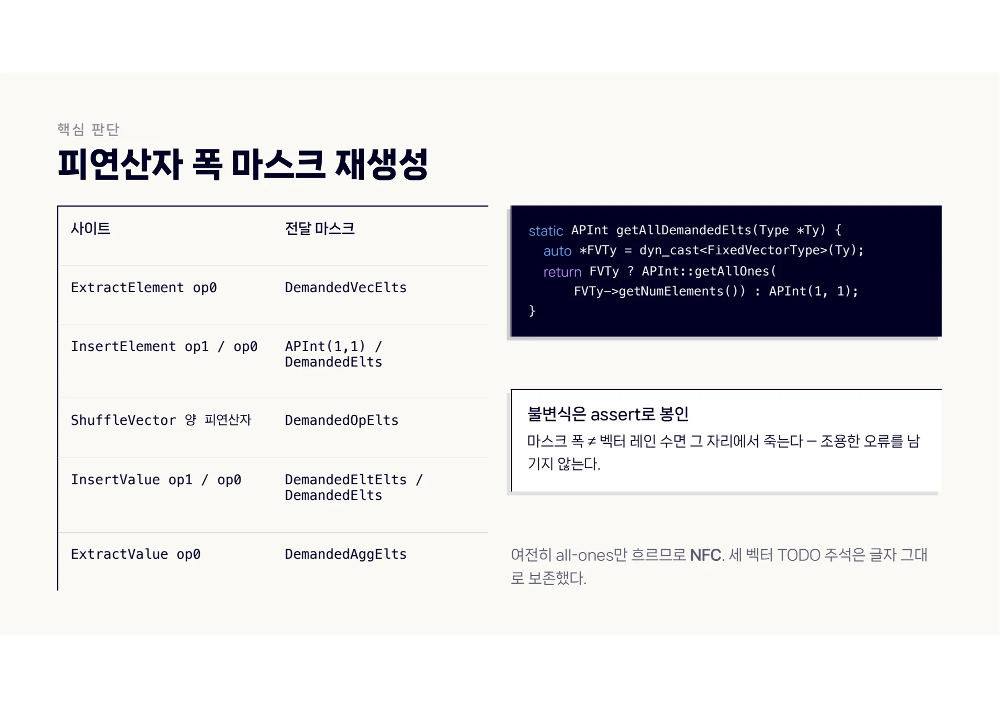
N FC 의 증 명 / "아무것도 달라지지 않았다" / 27파일 28/28 4,921 clean
NFC의 증명
"아무것도 달라지지 않았다"
27파일
28/28
before/after 출력 동일
fpclass lit
opt.before vs opt — 바이 트 단위 일치
기존 27 + 신규 회귀 테스트 1
회귀 테스트 신설 — 파일명에 reland가 아니라 못 박는 불변식을 담 았다: …-demanded-elts-width.ll (함수 6개).
4,921
CodeGen/AMDGPU lit
builder #123 대응, 최우선 실행
clean
assertion 빌드
경고·에러·폭 불일치 없음
유일한 실패는 stale llvm-lto2 탓 — InstCombine 미도달, 재빌 드 후 통과.
페이지 배치·기호·도식 확인하기

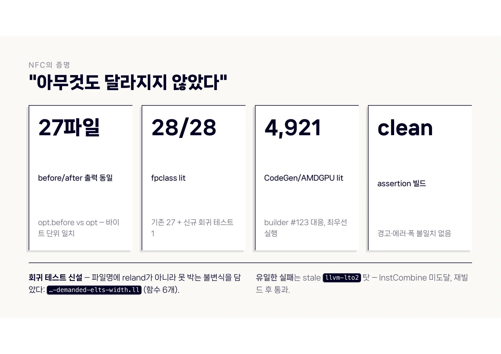
제 출 / PR #212183 — OPEN / c0bcea9d Support DemandedElts in
제출
PR #212183 — OPEN
c0bcea9d Support DemandedElts in SimplifyDemandedFPClass
39b39165 Formatting Files
8ad61bb0 Add Test — 회귀 테스트
head kevinlim17:reland-174176- demandedelts
base llvm:main
PR 본문의 뼈대
SQ 관통 대응 · multi-use 헬퍼 · 폭 안전화 · 폭 assert
+ 크래시 재현 IR. 파일 3개 관통 — 계획엔 없던
InstructionCombining.cpp가 필수였다.
llvm:instcombine
reviewer: arsenm
llvm:transforms
code owner: nikic
원본 #174176을 리뷰·승인·머지한 사람이 @arsenm — 재착 륙 리뷰어로 자연스러웠다. 현재 arsenm 코멘트(설명·테스트 주석 간결화) 반영, code owner nikic 대기.
페이지 배치·기호·도식 확인하기

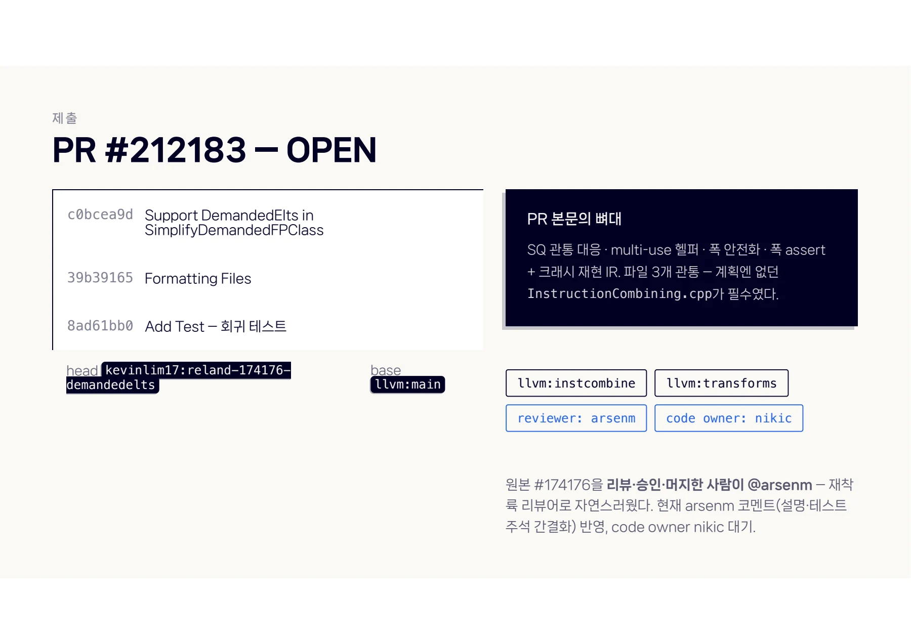
다음 단계 — Alive2 먼저, PR B 다음 / 리뷰 대응 PR 본문 오타 Alive2 (T2) PR B
다음 단계 — Alive2 먼저, PR B 다음
1 리뷰 대응
arsenm 코멘트 반영 중 · 폭 안전 화 질문의 근거는 재현 결과
2 PR 본문 오타
clang-hlp-vega20 → clang- hip-vega20
3 Alive2 (T2)
fpclass 스위트 translation validation — PR B 선행
4 PR B
세 TODO의 실제 demanded- elements 레인 로직
if (DemandedMask == fcNone || !DemandedElts) {replaceUse(U, PoisonValue::get(VTy)); ... }
오늘 !DemandedElts는 절대 참이 안 된다 — 죽은 코드. PR B에
서 처음 살아나며 하는 일이 poison 도입이다. 레인 하나라도 틀
리면 살아 있는 레인을 죽인다. lit은 "출력이 달라졌다"까지만, 어
느 레인이 왜 틀렸는지는 Alive2만 안다.
페이지 배치·기호·도식 확인하기

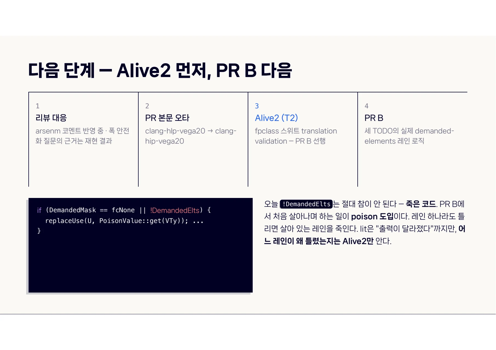
정리 / 디버깅 — 로그가 지워져도 원
정리
01
디버깅 — 로그가 지워져도 원 인은 손에 쥘 수 있다
출처 분리 → 메커니즘 가설 → 표적 재
현. 세 단계가 pruned 로그를 대체했 다.
02
OSS — revert→reland는 실패가 아니라 정상 경로
원인을 재현해 고치고, 회귀 테스트로 못 박고, 리뷰어에게 근거를 준다.
github.com/llvm/llvm-project/pull/212183
03
결과 — 실재하던 크래시를 제 거하고 기능을 되살렸다
되돌려진 기여는 끝난 게 아니라 이어 받을 수 있는 것이다.
감사합니다
페이지 배치·기호·도식 확인하기

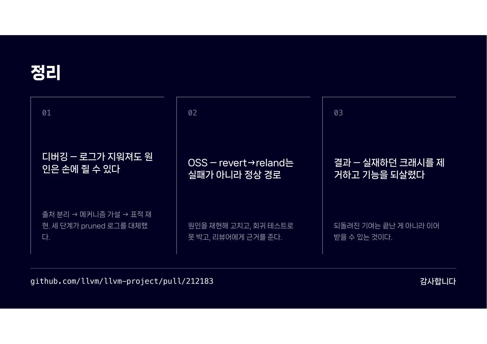
부 록 · Q & A / 팩트시트 / 이슈 · PR 계보 크래시
부록 · Q&A
팩트시트
이슈 · PR 계보
Issue #174143 — RKSimon, good first issue
Land #174176 — 3c9d46ae, 2026-01-02
Revert #174242 — 050c447e,
Reland #212183 — base 8c57bdb49de3
빌더
#123 clang-hip-vega20 — AMDGPU HIP
build 32907
pruned
#162 lldb-x86_64-debian —
크래시
APInt.h — "Bit position out of bounds!"
exit 134 ·
computeKnownFPClass
3 — ExtractElement /
narrowing ShuffleVector / InsertValue
검증 · 커밋
fpclass 28/28 · AMDGPU 4,921 · NFC diff
c0bcea9d / 39b39165 / 8ad61bb0
arsenm · code owner nikic
페이지 배치·기호·도식 확인하기

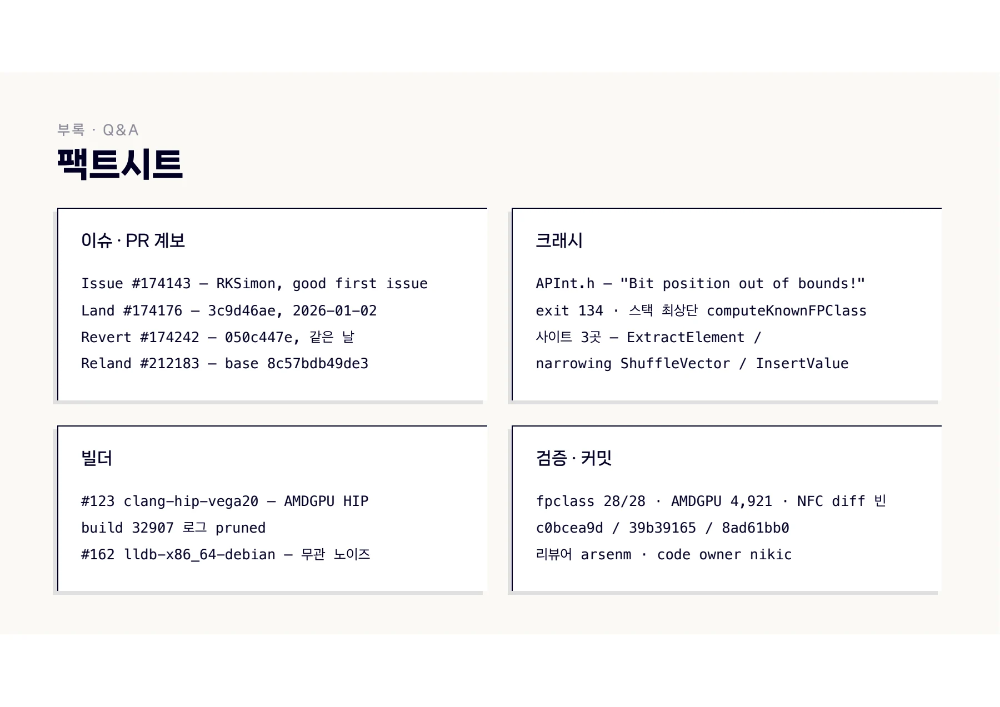
핵심 원리와 편집 주석
작업 범위
기존 패치는 SimplifyDemandedFPClass에 필요한 vector 원소 정보를 전달하는 인자를 추가했다. 병합 뒤 되돌려졌고, 작성자는 재적용 작업을 진행했다.
재현한 결함
결과 타입의 마스크 폭을 다른 타입의 피연산자에 그대로 전달하면 vector 원소 수와 맞지 않을 수 있다. 좁은 마스크에서 더 큰 원소 위치를 읽으면 assertion이 발생한다.
- two-use extractelement 입력으로 먼저 일어나는 scalar화를 막는다.
- narrowing shufflevector를 확인한다.
- vector 원소를 가진 insertvalue를 확인한다.
- 크래시가 없던 widening·삽입·추출 경로도 폭 조건을 검사한다.
자료는 세 경로의 크래시를 로컬에서 재현했다고 기록한다. 원래 buildbot 실패와 동일한 실행 경로였는지는 만료된 로그 때문에 직접 입증하지 못했다.
수정 원리
마스크는 결과 타입이 아니라 질문을 전달할 피연산자의 타입에 맞게 만든다. vector에는 해당 원소 수의 all-ones, scalar에는 1비트 마스크를 사용한다.
폭과 원소 수의 관계를 assertion과 회귀 테스트로 고정한다. 아직 구현하지 않은 레인별 처리의 TODO는 기반 작업과 구분해 유지한다.
검증 기록
| 검증 | 원자료의 결과 |
|---|---|
| 기존 27개 파일 전후 IR | 바이트 단위 동일 |
| FP-class lit | 28/28 통과 |
| CodeGen/AMDGPU lit | 4,921 통과 |
| 새 폭 회귀 테스트 | 6개 함수 |
stale 도구 때문에 발생한 실패는 재빌드 후 다시 확인했다. 자료는 PR #212183 제출과 당시 리뷰 상태를 기록한다.
후속 작업
다음 단계는 실제 demanded-lane 처리를 추가하는 것이다. 사용하지 않는 레인에 poison을 도입할 때는 살아 있는 레인까지 손상하지 않는지 확인해야 한다.
이 단계의 테스트 수는 안정성 확인의 근거다. 출력이 같다는 결과를 새로운 성능 향상 수치로 바꾸지 않는다.
문서 전문과 버전
- PDFPDF 원자료 · 21쪽reland-174176-slides.pdf
각 자료는 별도의 버전입니다. 같은 주제라도 구현 상태·설명 범위·수치가 다를 수 있습니다.
관련 이슈와 PR
구현·병합 상태와 측정값은 해당 제출 자료의 작성 시점 기준입니다.